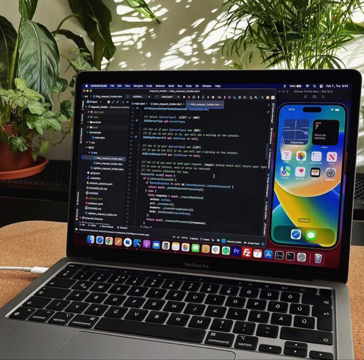

Welcome to my little corner of the internet!
Name: Janimah Abdul
Age: 20
Birthday: July 28, 2003
School: Emilio Aguinaldo College Cavite
Year Level: 2nd Year
Course: Bachelor of Science in Computer Science
Let me introduce myself—I'm a diligent and dedicated student with a passion for learning and exploring new horizons. My relentless work ethic is not just a trait but a way of life, as I believe that hard work is the key to unlocking endless opportunities and achieving one's dreams.
When I'm not buried in textbooks or coding away at my computer, you can often find me indulging in my favorite pastimes. One of my greatest joys is immersing myself in the captivating worlds of series and movies. Whether it's unraveling the mysteries of a thrilling drama or escaping reality with a fantasy epic, I cherish the moments spent lost in cinematic adventures.
But my love for storytelling doesn't end with the screen. I also have a deep appreciation for the written word, regularly diving into novels and webtoons that transport me to faraway lands and introduce me to fascinating characters. There's something magical about the way words can paint vivid images in the mind and evoke emotions that resonate deeply within the soul.
Of course, my interests extend beyond the realm of entertainment. As a budding coder, I find immense satisfaction in the intricacies of programming and the endless possibilities it offers for innovation and problem-solving. Whether I'm tinkering with a new project or diving into the complexities of algorithms, I'm constantly seeking to expand my skills and push the boundaries of what's possible in the digital world.
In addition to my academic pursuits and hobbies, I'm also a proud pet parent to a beloved feline companion named Zahid. He may be a little mischievous at times, but his playful antics never fail to bring a smile to my face and remind me of the simple joys in life.
But perhaps what brings me the greatest joy of all is the bond I share with my closest friends, Rojean and Lorah. Together, we navigate the ups and downs of life, supporting each other through thick and thin and creating memories that will last a lifetime. Whether we're embarking on spontaneous adventures or simply sharing laughs over a cup of coffee, their presence enriches my life in ways I could never have imagined.